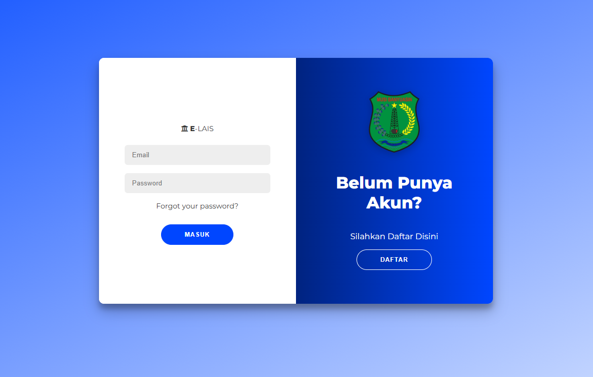
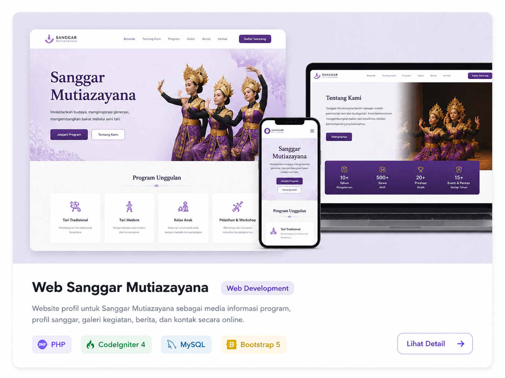
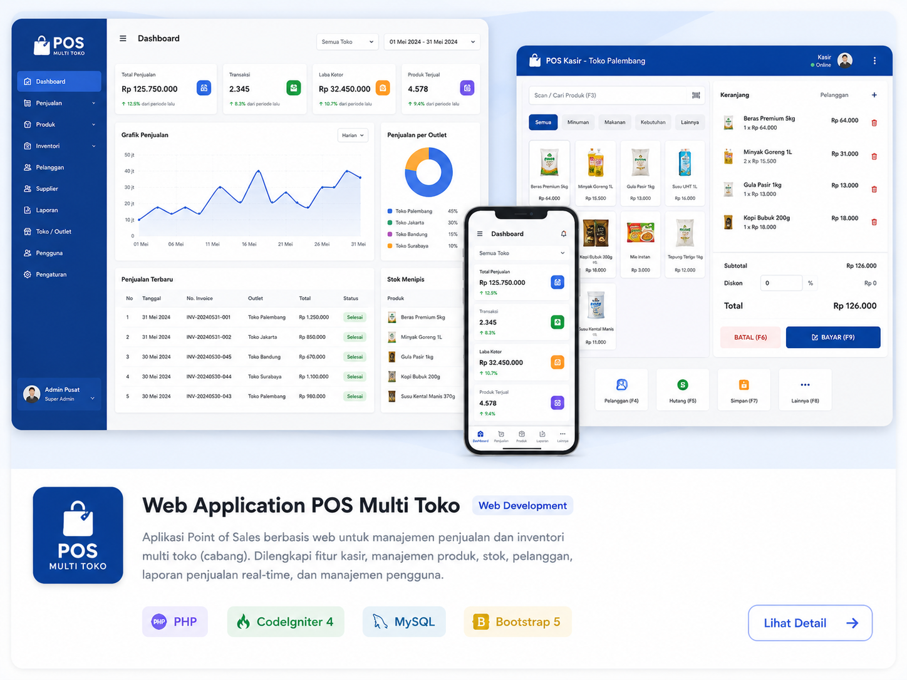

13 JULI 2026 — SEKARANG
Asisten Lapangan SPPG
Badan Gizi Nasional
Mendukung aktivitas lapangan pada Satuan Pelayanan Pemenuhan Gizi (SPPG), dengan perhatian pada ketepatan waktu, keselamatan kerja, koordinasi, dan pencapaian target.
INFORMATION SYSTEM · FRESH GRADUATE
Alumni Sistem Informasi UIN Raden Fatah Palembang dengan pengalaman operasional, administrasi, pengolahan data, koordinasi organisasi, dan pengembangan sistem informasi.
Saya adalah Alumni Prodi Sistem Informasi UIN Raden Fatah Palembang yang disiplin, bertanggung jawab, dan memiliki ketelitian tinggi. Saya memiliki pengalaman mendukung kegiatan operasional, administrasi, serta pengolahan data selama magang di perbankan dan terbiasa bekerja sesuai standar operasional prosedur (SOP).
Saat ini saya bekerja sebagai Asisten Lapangan Satuan Pelayanan Pemenuhan Gizi (SPPG). Saya mampu bekerja secara individu maupun tim, cepat beradaptasi di lingkungan kerja, serta siap menjalankan tugas lapangan dengan mobilitas tinggi.
Badan Gizi Nasional
Mendukung aktivitas lapangan pada Satuan Pelayanan Pemenuhan Gizi (SPPG), dengan perhatian pada ketepatan waktu, keselamatan kerja, koordinasi, dan pencapaian target.
PT Bank SumselBabel
Mendukung kegiatan operasional dan pelayanan serta terbiasa bekerja secara terstruktur mengikuti prosedur kerja.
STUDY CLUB SISTEM INFORMASI



Jika Anda ingin berdiskusi mengenai posisi, kolaborasi, atau project, silakan hubungi saya.